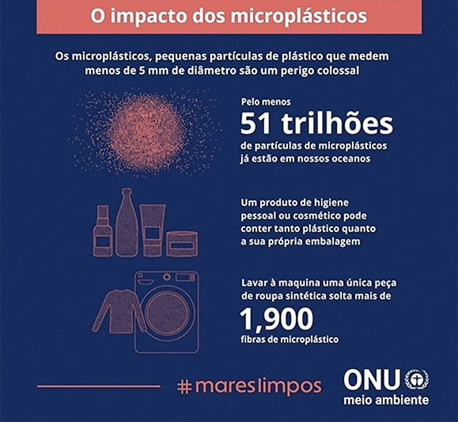

A poluição do oceano por microplásticos, fragmentos de plástico menores que 5 mm, que são onipresentes em nossos cursos d'água.
A ingestão de microplásticos causa danos físicos e exposição a toxínas. Eles ameaçam tanto ecossistemas marinhos quanto a saúde humana, na medida que se acumulam na cadeia alimentar.
Será criada uma rede de sensores que detectam microplásticos usando inteligência artificial. Sensores serão instalados em drones subaquáticos (AUVs)
Bactérias sintéticas (Ideonella sakaiensis) descontaminarão a água. Drones subaquáticos medirão microplásticos e liberarão bactérias que consomem plástico, destruindo-se depois.
Temos como meta a diminuição do microplástico no oceano como geral.
Nosso principal objetivo é restaurar os ecossistemas ao normal e afetar positivamente quem depende dele.
Nosso público-alvo são as pessoas que se interessam ativamente pela ambientalismo marinho.
A eliminação de microplásticos no oceano traz benefícios ambientais, sociais e econômicos. Protege a vida marinha e reduz danos físicos.
A diminuição da contaminação em peixes reduz riscos de exposição a toxinas. Alimentos mais seguros melhoram a segurança alimentar das comunidades.
O impacto será notável. Tanto as vidas marinhas quanto os consumidores serão beneficiados pela remoção de microplásticos e pela reestruturação do ecossistema marinho.
